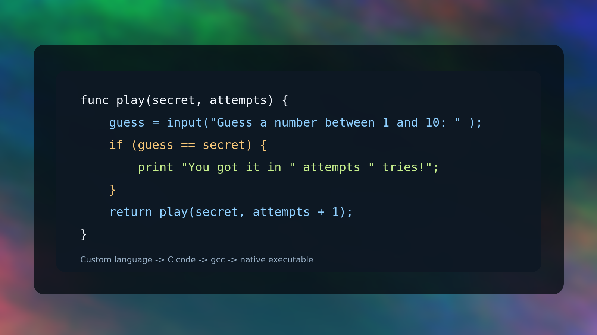

Expressions
`+`, `-`, `*`, `/` plus comparison operators like `==`, `<=`, and `!=`.
Custom Language -> C -> Native Binary
A small custom programming language implemented in C. Sequoia compiles `.seq` source into C, builds it with `gcc`, and runs the result.

Why it exists
Lexer and parser turn `.seq` source into an AST.
Constant folding trims simple arithmetic before code generation.
Sequoia emits C, compiles with `gcc`, and executes the binary.
Language
Sequoia is intentionally compact. Today it focuses on integer math, assignment, functions, conditionals, console output, user input, and a built-in random number generator.
`+`, `-`, `*`, `/` plus comparison operators like `==`, `<=`, and `!=`.
Named functions accept integer parameters and return integer values.
`if` / `else` blocks make recursion and branching possible today.
`print` mixes strings and values, while `input(...)` reads integers.
func square(x) {
return x * x;
}
value = rng(1, 10);
guess = input("Your guess: ");
if (guess == value) {
print "Nice job!";
} else {
print "The number was " value;
}make
./sequoia tests/testprogram.seq
./sequoia tests/guessergame.seqBuiltins
input()Reads one integer from standard input. `input("Prompt: ")` prints a prompt first.
rng()Returns a raw random integer from C's `rand()` after startup seeding.
rng(max)Returns a value from `0` to `max`, inclusive.
rng(min, max)Returns a value from `min` to `max`, inclusive, swapping bounds if needed.
Example
The repo now includes a playable Sequoia guessing game that uses `rng`, `input`, comparison operators, and recursion in place of loops.
func play(secret, attempts) {
guess = input("Guess a number between 1 and 10: ");
if (guess == 0) {
print "Game ended.";
return 0;
}
if (guess == secret) {
print "You got it in " attempts " tries!";
return 0;
}
if (guess < secret) {
print "Too low.";
} else {
print "Too high.";
}
return play(secret, attempts + 1);
}
print "=== Number Guesser ===";
print "I'm thinking of a number between 1 and 10.";
print "Enter 0 to quit.";
secret = rng(1, 10);
game_status = play(secret, 1);Publish
This site is static and lives in the repo's `docs/` folder, which works well with GitHub Pages. Point Pages at `docs/` on your default branch and it should publish cleanly.
Repository Settings
-> Pages
-> Build and deployment: Deploy from a branch
-> Branch: main
-> Folder: /docs